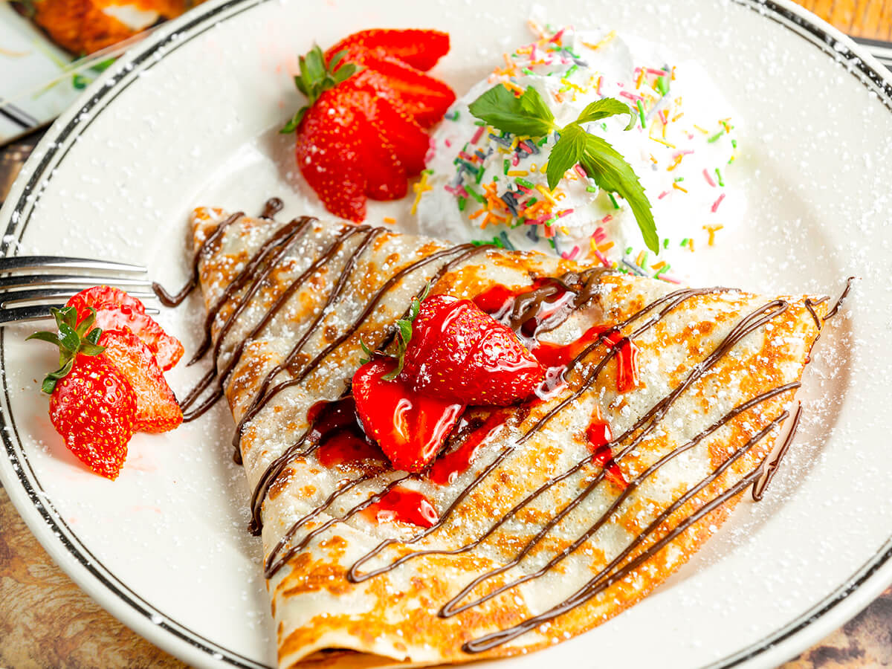

Recept za palačinke


Potrebni sastojci:
- 200 g brašna
- 2 jajeta
- 300 ml mleka, dodati i malo vode
- 100 ml ulja
- 1 mala kašičica soli i šećera
Priprema:
- Pomešajte jaja sa šećerom i solju u većoj činiji pomoću ručnog miksera
- Dodajte u smesu ostale sastojke i nastavite da mešate mikserom dok ne dobijete glatku smesu
- Gotovu smesu ostavite da odstoji u frižideru 30 minuta
- Zagrejte tiganj na srednjoj vatri i po njemu ravnomerno rasporedite malo ulja
- Izlijte deo pripremljene smese u sredinu tiganja i brzim okretanjem tiganja rasporedite smesu po celoj površini tiganja.
- Kada rubovi palačinke promene boju i postanu suvi i smeđi, okrenite je i kratko pecite na drugoj strani.
- Na pečene palačinke dodajte namaz po želji
PRIJATNO
VRH